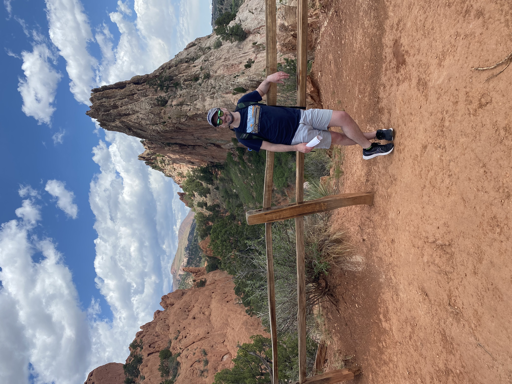

About
Early Years:
Sawyer was born in New Hampshire in the mid 90's. He is the youngest of three boys. His family moved to New Mexico when he was only three, only to move back to New Hampshire when he was 11. While in New Mexico, Sawyer developed a love for the American South West and Mexican cusine. Thoughout his highschool years he played soccer, swam on the swim team, and ran the hurdles in track and field, eventually taking 3rd place in the 300 meter hurdles at states his senior year. During his time in highschool he also played trumpet in the jazz band. In his senior year, he left soccer to try cross country running, comming in 16th at the state championship that year.
College years:
After graduating highschool, Sawyer attended Clarkson University for Civil Engineering. However, after two years, he realized Civil Engineering was not what he wanted to do. He decided to move back to his hometown of Keene, NH, and transfer to Keene State Colege for Architecture. After earning an unacredited degree in Architecture from Keene State College, he decided to complete the accredidation through Norwich University's Architecture Program.
After College:
Once completed, he secured a job with a large design-build firm in Hooksett, NH. Unfortunately, in 2020, Covid swept the nation, causing his firm to shut down and layoff most of their employees. For 6 months he looked for work until finding a job in Kitchen and Bath Design.
Today:
Today, Sawyer sometimes manages up to 60 projects at a time while working with customers, vendors, and contractors, to create beautiful kitchens, bathrooms, and other spaces with cabinetry. When he's not working he can be found in his kitchen cooking, out on the road running, or in the mountains hiking with his wife. He an his wife love to go on adventures together and travel. They have traveled out west to Colorado, Utah, Arizon, and Southern California. As Well as places like St. Lucia, Niagra Falls, Boston, and New York City.
Changing Course:
After several years working at his current job, Sawyer found there is little room for growth in his current position. With the feeling that he's worked himself into a corner with his career, He decided to look into other career oprotunities. This has lead him on a new journey with coding and software development.